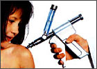

Пациентам, пользующимся услугами косметических кабинетов, которые проводят различные инъекционные и акупунктурные процедуры, всегда хочется быть уверенным, что иглы, применяемые для такого рода манипуляций, стерильны. Согласно данным, представленным на 41 Ежегодной Конференции Американского Общества по Инфекционным Болезням (IDSA), косметические инъекции и акупунктура могут явиться источником атипичной инфекции кожи и мягких тканей, вызванной Mycobacterium abscessus. При местной инфекции M.abscessus отмечается риск развития обширного рубцевания, причем опасность инфицирования связана с каждым проколом кожи.
Согласно данным, представленным на 41 Ежегодной Конференции Американского Общества по Инфекционным Болезням (IDSA), косметические инъекции и акупунктура могут явиться источником атипичной инфекции кожи и мягких тканей, вызванной Mycobacterium abscessus. На конференции было представлено три исследования, посвящённых данной проблеме.
Группа экспертов Центров по контролю и профилактике заболеваний США (CDC) во главе с R. Turcios изучила вспышку инфекции, вызванной М.abscessus, у пациенток, пользовавшихся услугами двух косметических салонов в Нью-Йорке, не имевших лицензии на проведение косметических инъекций. Среди женщин, прибегнувших к таким инъекциям для устранения морщин, увеличения груди или ягодиц или для лечения целлюлита, за 6 месяцев 2002 г. было отмечено 24 случая инфицирования М.abscessus. Среди вводимых препаратов отмечены импортные, не получившие одобрения FDA, средства артишока, предназначенные для лечения целлюлита. Кроме того, использовались препараты коллагена, силикона, витамины и лидокаин.
Инкубационный период инфекции варьировал от 2 до 80 дней, а среднее время лечения составило 15 дней. Среди заболевших 12 пациенткам потребовалась госпитализация, средняя продолжительность которой составила 23 дня; 15 женщинам потребовалось хирургическое лечение. Нескольким пациентам проводился 6 месячный курс антибиотикотерапии, и у всех без пациенток было зафиксировано развитие выраженного рубцевания.
По причине того, что «услуги» предоставлялись передвижными косметическими кабинетами, CDC не могли установить причину инфицирования на протяжении длительного времени.
Во втором сообщении были описаны схожие случаи инфицирования M.abscessus в Сантьяго (Чили) в период с июля по декабрь 2002 г. Развитие инфекции отмечалось у 51 человека (из них 50 женщин), которые заболели после проведения косметических инъекций в область спины, живота, ягодиц, бедер, рук и лица для удаления подкожного жира при так называемой мезотерапии. Мезотерапия - широко применяемая в Южной Америке процедура. Руководитель исследования C. Perez отмечает, что так же, как и в первом случае, у всех пациентов после проведенных процедур появились выраженные рубцовые изменения тканей. 5 клиник, причастных к данной вспышке инфекции, были закрыты.
Последнее сообщение освящает подобную вспышку инфекции в Торонто. M.abscessus были инфицированы лица, пользовавшиеся услугами специалистов по акупунктуре. Также как и в первом случае, инкубационный период был достаточно длительным (до 5 месяцев). Инфекция локализовалась лишь в области нанесения уколов, хотя и в этом случае отмечалось образование выраженных рубцов.
Исследователи обращают внимание на необходимость проведения подобного рода исследований в плане выявления вспышек схожих случаев инфекций кожи и мягких тканей в различных частях земного шара. При том очень важно, что инфекции вызывались микроорганизмом, близким к возбудителю туберкулёза.
В описанных выше вспышках основную роль сыграло то, что косметические услуги предоставлялись без соответствующих лицензий. Необходимо отметить, что источником инфекции могут быть и нестерильные иглы, и используемые в лечебных целях субстанции, что требует постоянного и пристального внимания регуляторных органов здравоохранения. Данные случаи можно считать прямым указанием для регулирующих инстанций на необходимость ужесточения контроля за деятельностью представителей альтернативной медицины.
Reviewed by G.D.Vogin
Atypical soft tissue infections linked to cosmetic procedures and acupuncture
IDSA annual meeting: posters ## 845,846,847. Presented Oct. 10, 2003